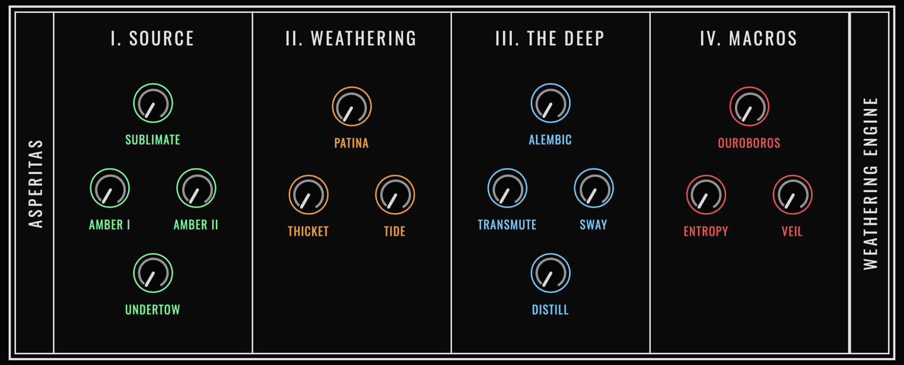
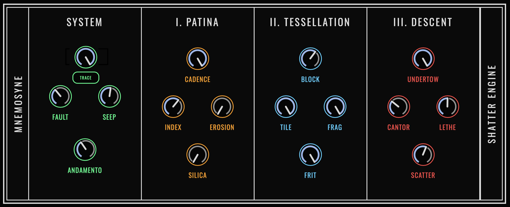
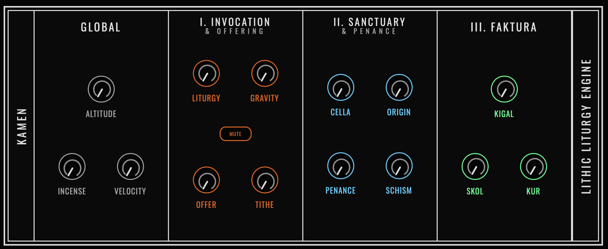
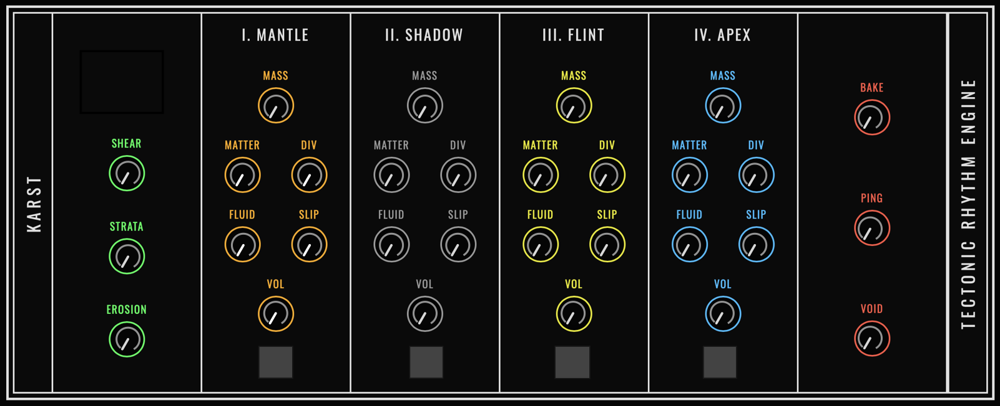

ASPERITAS
"A sound, once struck, belongs to the elements."
Surrenders artifacts to erosion. High frequencies rust. Structural attacks blur into breathing phase swells.


MNEMOSYNE
"Memory is a ruin reconstructed from shattered pieces."
Casts audio in mortar. Architecture subjected to fault lines, temporal decay, and violent dropouts.


KAMEN
"The sanctuary of the grid, desecrated."
Understands the violence of incoming transients and the heavy, inertial sag of the stone.


KARST
"Rhythm is born from friction."
Slow ritual of mountain-building. Mass accumulates in the mantle until pressure forces a metallic strike.
